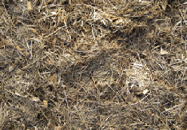

| Soil Fertility Land for raising plants and animals is a limited resource on this planet. Nature sets the rules: When humans interfere with “natures’ rules” the entire environment is affected … soil, water, air, animal and human inhabitants, and climate. Removing native vegetation (trees, shrubs, grass, etc.) by clear cutting, over-grazing or tiling, exposes the soil to wind and rain/water erosion, and destroys the soil structure. Chemical biocides and synthetic fertilizers kill organisms in the soil, further destroying soil structure. Irrigation can cause soils to become saline and unable to grow plants. Desertification of agricultural areas is a serious and growing problem all over the world. Protect the soil habitat: Nature covers the ground all the time. A cover buffers the impact of raindrops, the heat of the sun, improves soil structure, increases water infiltration and reduces evaporation. Healthy soil holds together and provides microbes and plant roots an environment where they can thrive. Soil will have resilience, and not be as effected by dry periods. Provide diversity: The more biodiversity in the system, the healthier and more resilient it is. If you have diversity above ground, you have diversity below ground. Some prairies had 9 species of plants per square foot. There are always some plants growing in changeable weather; windy, dry, wet, cool or warm. In fertile soils plants grow at an optimum rate enhancing flavor, tenderness and nutritional value. Fertile soils help plants resist pests and diseases. |
||||||||||||||||
| Soil under mulch or plants is moist, rich, dark and sweet smelling. | ||||||||||||||||
| During a dry period, the geese overgrazed this area. Without enough plant cover, soil can heat up and “cook”. When people cut lawns too short, they cook the soil and their grass browns-out and dies. | ||||||||||||||||
| Green growing cover plants provide the most benefit as they add the power of photosynthesis. | ||||||||||||||||
| “Most life-forms obtain their energy either directly or indirectly from the sun, via the process of photosynthesis.”
SOS: Save our Soils, Dr. Christine Jones, ACRES USA, March 2015 |
||||||||||||||||
| Bare soil areas can heat up and “cook” the soil. | ||||||||||||||||
|  | ||||||||||||||||
| Barn bedding mulch | Seaweed mulch | Winter mulch of dead celery plants over a summer seaweed mulch | ||||||||||||||